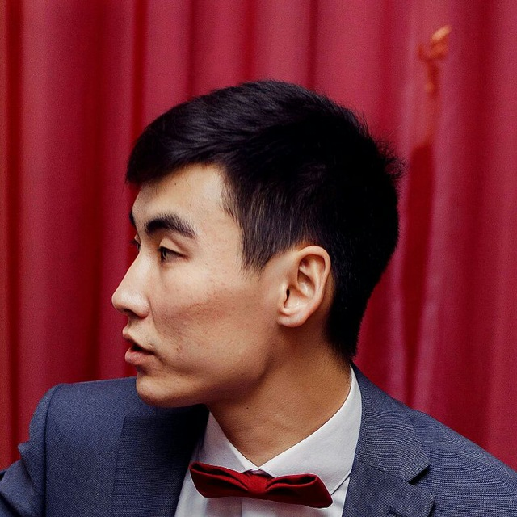

Больше всего меня привлекет Frontend разработка, но я также знаком и могу решать не сложные задачи на Backend. Но давайте по порядку.


Нуркен Сеитов
Личный сайт веб разрабочика
- Обо мне -

- Кто я -
Я веб разработчик из Костаная. Мне 24 года. Я занимаюсь разработкой современных сайтов и приложений. Мне нравится делать интересные и современные проекты.
Этот сайт я сделал в рамках обучения в Школе онлайн образования LoftSchool. Чуть позже я освежу в нём свой контент. А пока посмотрите, как тут всё классно и красиво!
- Чем я могу быть -
вам полезен